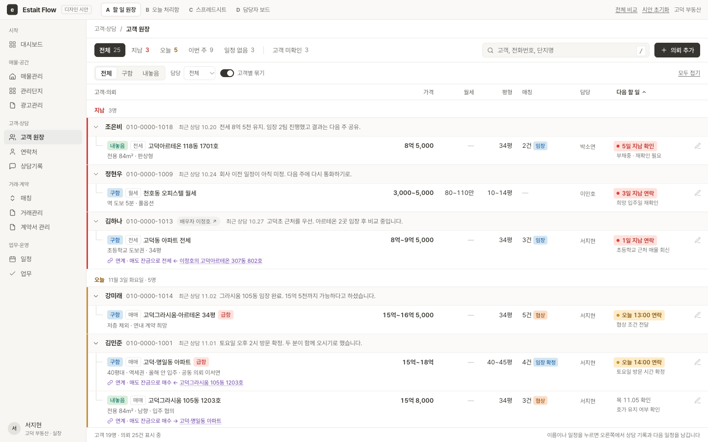
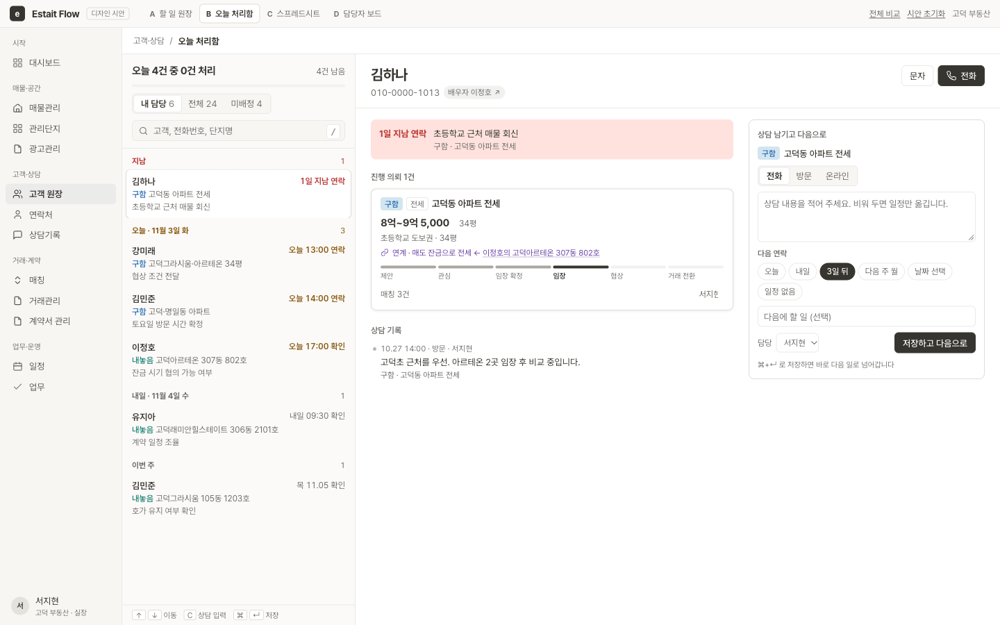
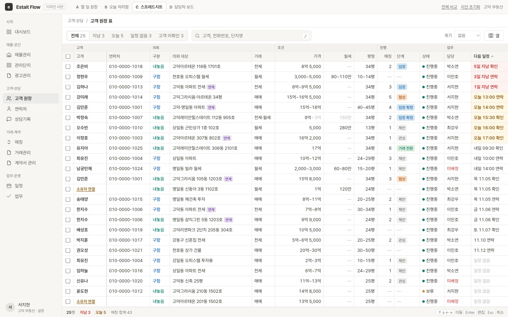
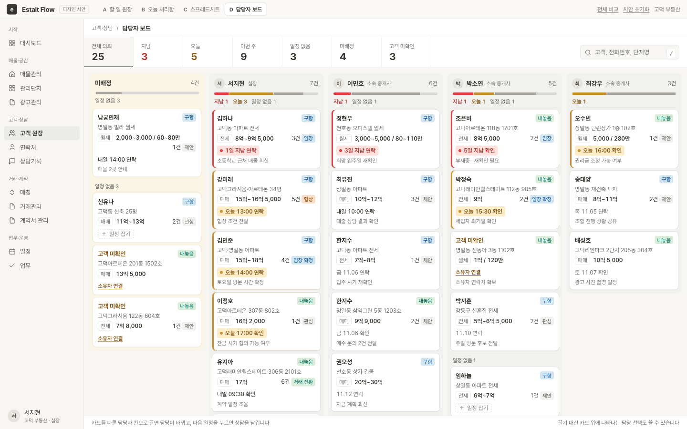

고객 원장을 어떤 화면으로 만들지 비교하는 시안 네 가지입니다. 같은 사무소 데이터를 쓰기 때문에, 한 화면에서 저장한 상담과 담당 변경이 다른 화면에도 그대로 나타납니다.

지금 원장의 표 구조를 지키면서, 다음 할 일 순서로 고객을 정렬합니다.

메일함처럼 일을 하나씩 처리합니다. 저장하면 바로 다음 고객으로 넘어갑니다.

엑셀처럼 칸을 옮겨 다니며 고치고, 여러 건을 한 번에 바꿉니다.

사장님이나 팀장이 직원별로 밀린 일을 보고, 카드를 끌어 담당을 넘깁니다.
| 시안 | 잘 맞는 상황 | 약점 | 확인해 볼 것 |
|---|---|---|---|
| A 할 일 원장 | 고객 전체를 훑으면서 급한 일도 함께 봐야 할 때 | 고객별로 줄이 길어 한 화면에 들어오는 수가 적습니다 | 기본 정렬이 다음 할 일이어도 고객을 찾기 편한가 |
| B 오늘 처리함 | 아침에 오늘 전화할 곳을 차례로 돌 때 | 가격이나 평형으로 고객을 비교하기 어렵습니다 | 직원들이 한 건씩 처리하는 흐름을 좋아하는가 |
| C 스프레드시트 | 엑셀에 익숙하고, 여러 건을 한꺼번에 고칠 때 | 구함과 내놓음이 한 표에 섞이고, 표가 가로로 깁니다 | 바로 고치는 편리함이 잘못 고칠 위험보다 큰가 |
| D 담당자 보드 | 5인 이상 사무소에서 일을 나누고 챙길 때 | 혼자 일하는 사람에게는 쓸모가 적습니다 | 원장을 대신하는 화면인가, 별도 관리 화면인가 |
네 가지 중 하나만 고를 필요는 없습니다. A를 고객 원장의 기본 화면으로 두고, D를 팀장용 보기로 더하는 구성을 권합니다. B는 A의 "오늘" 보기를 처리 모드로 여는 방식으로, C는 A의 "고객별 묶기" 끄기를 강화하는 방식으로 합칠 수 있습니다.
모든 이름·번호·메모는 가상이며 기준일은 2026년 11월 3일(화)입니다. 변경 내용은 이 브라우저에만 저장됩니다.